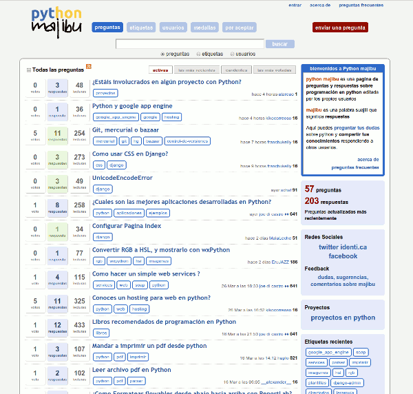

Aunque ya hace casi dos meses que está funcionando, no es hasta ahora cuando he
tenido un momento para escribir sobre este nuevo proyecto que he iniciado. Este
surgió a partir de otro proyecto anterior que resulto ser un fracaso, deaparatos
PyR, un sitio de Q&A (preguntas y respuestas) sobre gadgets y aparatos de
electrónica que se apoyaba en deaparatos.com mi anterior página sobre la misma
temática. Una vez realizado el esfuerzo de traducción al español y adaptación
del tema, se me ocurrió que podía aprovechar ese trabajo ya realizado para una
aventura bastante más práctica. Así el día 3 de febrero
sugerí en la lista de Python en español, donde se agrupa una buena parte de
la comunidad hispana de Python, el poder aplicar este mismo formato a un sitio
de Q&A sobre Python. La idea tuvo una buena acogida, y así
11 horas después, nacía Python majibu, mi pequeña contribución a la
comunidad Python en español. Y como decía en ese correo:
Escogí la palabra majibu porque significa respuestas en suajili. Es un
nombre sonoro y corto, en la moda de nombres como Ubuntu.
Este sitio se monta sobre la plataforma OSQA (Open Source Questions &
Answers) que la gente de DZone creo a partir del extinto proyecto
chino CNProg de Mike Chen and Sailing Cai. Estos dos proyectos
eran un clon del original formato empleado por StackOverflow, funcionando
sobre Django (ergo Python).
Stack Overflow es el sitio que ha conseguido revolucionar el formato de
Preguntas y Respuestas y causado un gran impacto mediático en la red, sobre todo
en el mundo anglosajón. Esto formato lo crearon Joel Sposky y
Jeff Atwwood para su red de sitios StackExchange (hoy ya constituida
como empresa) y que ha dado lugar a sitios tan exitosos en el mundo anglosajón
como el propio Stack Overflow, Server Fault, Super User,
Ask Ubuntu, How to Geek, etc. Un formato que se creo para
StackOverflow, por programadores y para programadores, centrado únicamente en
aspectos técnicos de la programación informática. Y su éxito ha sido tan brutal
que se ha extendido a multitud de temáticas que no paran de crecer día a día.
Es el formato del futuro inmediato, ya lo es ahora mismo del presente para
ciertas temáticas y es sin duda el formato que podría enterrar a los clásicos,
veteranos y populares foros. Y no es ninguna broma, la red de sitios de
preguntas y respuestas StackExchange arroja unas cifras de
16.6 millones de usuarios únicos mensuales1 y
72,8 millones de paginas vistas al mes y todo esto en poco más de dos años.
Aunque cronológicamente, primero fueron los foros, luego Yahoo Answers, sitios
como todoexpertos, luego el casi difunto servicio de Ask, luego propuestas
como Wolfram|Alpha e IBM Jeopardy2, más tarde y centrado en un
perfil de gente muy determinado y elitista: Quora Y por fin,
democratizando el formato y el conocimiento para todos los públicos: la red
StackExchange. De ahí surge luego OSQA como clon sobre Django de Stack
Overflow, y el futuro Qato por parte de la misma gente de DZone, pero de
pago y centrado en perfiles corporativos y grandes sitios de Q&A. Incluso la
gran red social, Facebook, se ha sumado, creando su propia propuesta
del formato de Preguntas y Respuestas.
Y en español han surgido también varias alternativas. Desde la red de
Shapado, otro clon de Stack Overflow creado en Ruby, a sitios como
ChaxPert, Respuestas para todo y otros sitios en español montados
también sobre OSQA como son Trabber y Cientifi.net
Básicamente un sitio de Q&A, es una web de preguntas y respuestas dirigida por
sus propios usuarios, que son quienes hacen las preguntas, las responden
compartiendo su conocimiento y moderan la comunidad. Es un formato basado en el
karma de sus usuarios y ellos son los protagonistas absolutos.
La ventaja principal es que a través de la participación de los usuarios
las respuestas más acertadas y valiosas ganan más visibilidad que las menos
ajustadas a la solución. Lo que es una gran ventaja para los que se vuelvan a
plantear esa misma pregunta, pues al leerla encuentran la solución más idónea
antes, sin verse obligados a navegar entre un mar de respuestas, o incluso
off-topics, como es tan frecuente en en los habituales foros. A tal extremo llega
esto que si uno realiza preguntas sobre programación en inglés en un buscador
como Google, la probabilidad de que la respuesta esté en Stack Overflow y entre
los primeros resultados del buscador es muy elevada.
Por lo tanto es un formato bastante más eficaz y dinámico que el de los foros y
el sistema de karma ayuda a crear una comunidad de gente muy competente. Además
el que la propia comunidad modere el sitio (gracias al sistema de karma) causa
que apenas exista la lacra del spam, que en estos sitios brilla por su ausencia,
así como la inexistencia de trolls que con este formato tienen muy pocas
posibilidades de causar problemas. Pero lo fundamental es que consigue que las
personas se animen a preguntar y a compartir sus conocimientos con mayor
naturalidad que con los foros y con muchos mejores resultados.

Python majibu
Yo echaba de menos algo como Stack Overflow en español, aunque no tengo
problemas con el inglés y consulto habitualmente los sitios de StackExchange,
era una pena que la comunidad en español no tuviera un sitio como este. Como
abarcar un campo tan amplio como el de la programación se me antojaba demasiado,
que menos que hacer mi humilde aportación a mi lenguaje de programación favorito,
Python. Aunque yo solo puse la base, el sitio lo crean sus usuarios,
python majibu no sería nada sin la gente que forma la comunidad de Python en
español. Ellos son los que aportan el conocimiento, la verdadera esencia del
sitio y los que decidirán el éxito o no del proyecto y su rumbo.
Para personalizar el sitio, con respecto a la instalación por defecto de OSQA,
completé la traducción que otros habían iniciado anteriormente al Español y cree
un nuevo tema para majibu. Este trabajo está disponible en mi repositorio
para todo aquel que quiera aprovecharlo.
Adelante, usadlo si queréis, resolver vuestras dudas sobre Python y ayudar a
resolver las de los demás... el sitio es todo vuestro, yo solamente soy el
intermediario necesario para que sea posible. Para utilizar este nuevo sitio no
es necesario crear una cuenta nueva, se puede entrar usando tu cuenta de
Facebook o Twitter. También puedes usar cualquier otro servicio que soporte
OpenID como Google, Yahoo, myOpenID, Blogger, Wordpress, Flickr, etc.
Hay comentarios.